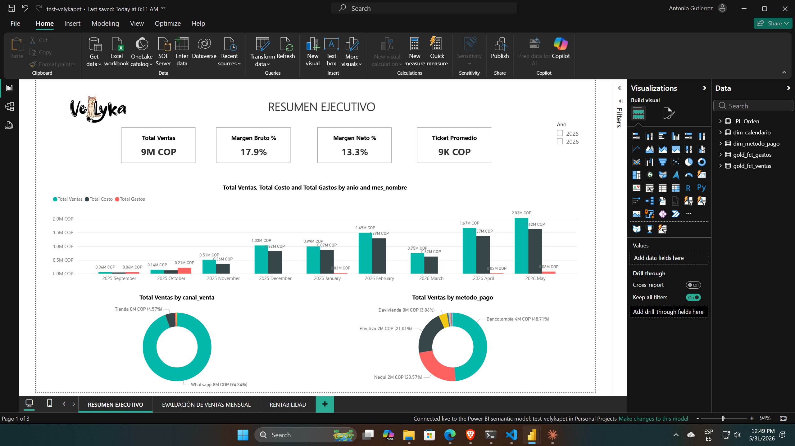
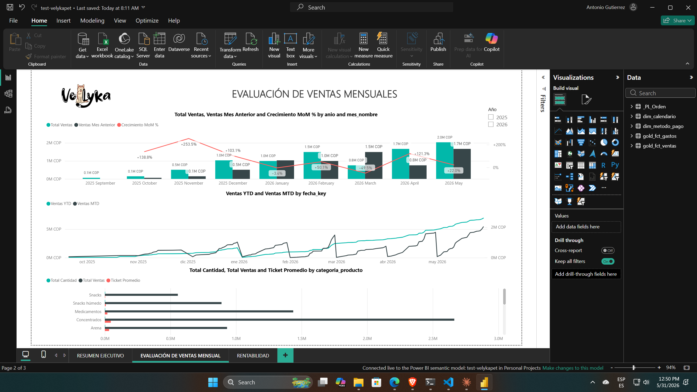
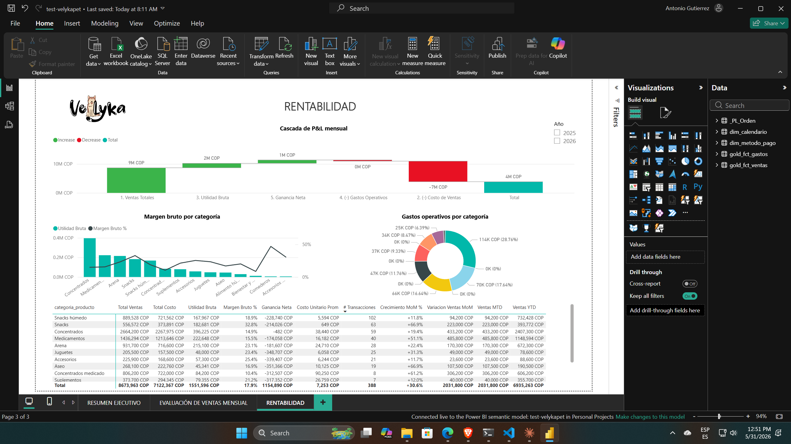

Objetivo
Implementar un pipeline de datos que permita monitorear ventas, inventarios y rentabilidad en tiempo real, categorizando el portafolio estratégicamente.
Solución integral de Business Intelligence desarrollada para una microempresa, utilizando el ecosistema de Microsoft Fabric y Power BI para transformar datos operativos en decisiones estratégicas.
El proyecto Velykapet se centra en proporcionar visibilidad total sobre las operaciones de una microempresa, eliminando silos de información y automatizando el reporte de KPIs críticos.
Implementar un pipeline de datos que permita monitorear ventas, inventarios y rentabilidad en tiempo real, categorizando el portafolio estratégicamente.
Uso de Microsoft Fabric para la gestión del Lakehouse y Power BI para el modelado semántico avanzado y análisis de ROI.
Identificación de productos con pérdida real (-13% margen) y oportunidades de alto ROI (>1000%) en categorías de medicamentos.
Se realizó una clasificación avanzada de 181 SKUs basada en ROI, margen bruto y frecuencia de compra, definiendo rutas de acción claras para cada segmento.
Productos Ancla: Alto volumen y margen estable. Ejemplo: Arena Maíz 10kg (31% ROI). Estrategia: Suscripción y fidelización.
Joyas Ocultas: ROI excepcional (>40%) con bajo volumen actual. Ejemplo: Total FLC (1,194% ROI). Estrategia: Visibilidad y combos.
Fugas de Dinero: Margen negativo o cero. Ejemplo: Arena Tofu (-13.7% margen). Estrategia: Descontinuar o renegociar costos.

Consolidado de ventas y métricas principales de rendimiento.

Desglose por categorías y tendencias temporales.

Seguimiento de inventarios y eficiencia de procesos.